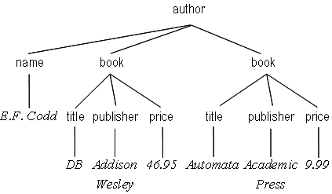

|
|
A Tutorial on Morph
Flexible Querying for XML |
| Home | |
| Tutorial | |
| Demo | |
| Download | |
| Publications | |
| Curtis Dyreson | |
| Home | |
| Publications | |
| Projects | |
| Software | |
| Demos | |
| Teaching | |
| Contact me | |
This section gives a short tutorial on Morph through a series of examples of increasing complexity. The ANTLR syntax for Morph is available. The examples in this tutorial will transform the data about books written by E. F. Codd shown below.

Though database query languages tend to be declarative rather than functional, Morph is a functional query language (i.e., similar to a query algebra rather than a query calculus). The primary function in Morph is a morph, which places children below a parent in the result. The parameter of the morph function is a pattern, which specifies the structure of the result. Below is an example of a morph.
List titles by author: morph author [ name title ]
The query lists the titles written by each author extracted from a collection of book data. The pattern specifies that <title> and <name> elements are placed as children of <author> elements. Only <title> and <name> elements that are closest to an <author> element are placed within that <author>. The notion of closeness, which forms the core semantics for Morph, is explained in the Morph publications, but intuitively the idea is that authors are closely related to the titles of their own books and articles (and their own names), but not close to titles written by others (or the names of others).
A morph can be restricted to select individual authors. Suppose we want only the titles by the author E. F. Codd. Then we can use the query given in below which selects <author> elements where the value of the element is 'E.F. Codd'.
List titles only for the author named 'E. F. Codd': morph author [ name, where value == 'E. F. Codd' title ]
The result is the same as that above since only E. F. Codd has authored books in the source data.
There may be duplicate authors in the data, but authors can be grouped to eliminate the duplicates. The query given below shows an example that consolidates titles under a single E. F. Codd author using a 'group' modifier for the author.
List titles grouped by E. F. Codd: morph author, group [ name, where value == 'E.F. Codd' title [ book, hide ] ]
Modifiers are listed after a label, separated by commas. The group modifier uses the default, persistent grouping for author (e.g., author is grouped by its 'key' as specified by the data's schema, or by the distinct-values function for a schema-less data collection). Authors could also be dynamically grouped during query evaluation, by specifying a grouping pattern. E. F. Codd wrote both books and articles, and we may want to select only book titles. In the query given in below, <title> elements closest to a <book> element are selected but books are hidden in the output; a <book> is only used to find a closely-related <title>. The result is the same as that shown above since the data has only <book>s.
List book titles by E. F. Codd: morph author, group [ name, where value == 'E.F. Codd' title [ book, hide ] ]
Though Morph assumes that a user is familiar with the vocabulary of the data, it also has a translate function to automate translation of a query or its result into the terms desired by a user. The translation can be specified before a morph, with the output of the translation being piped into the morph, as shown below, or after a morph, in which case the output of the morph is piped into a translate function.
Translate author to writer: translate author -> writer | morph writer [ name, where value == 'E.F. Codd' title [ book, hide ] ]
The pipe operator, '|', is used to connect the output of one Morph function into the input of another function. Initially, the input is assumed to come from a default data collection, but the data collection could be explicitly named using a data specification as illustrated below.
Translate author to writer: data 'dblp.xml' | morph author [ name, where value == 'E.F. Codd' title ]
To this point, the descriptions of the queries have avoided describing the shape of the input, that is, the same query could be applied to data in a variety of hierarchies. Moreover each query, when applied to the same data in different hierarchies will produce the same output. The only hierarchy that the user needs to specify is that of the output. To illustrate this, consider the query shown below.
Morphing a morph: morph publisher, group [ title [ author [ name ] ] ] | morph author [ name title ]
The query applies a morph to the result of a morph. The first morph produces a hierarchy which lists the titles published in each year and within each title the authors for that title. The second morph is a transformation previously given.
Morph also supports mutation of the data's hierarchy. A mutation is like a morph in that it changes the shape of the hierarchy; but unlike a morph, the entire hierarchy is implicitly involved. A mutation is given in below.
Mutating: mutate author [ publisher title, clone ]
The mutation explicitly lists only three types, but it outputs the entire hierarchy, with two mutations. First it moves <publisher> elements to within the closest <author> elements, and second, it clones <title> elements to also place them under the closest <author> (the un-cloned <title> elements will remain in place). The rest of the hierarchy is not changed.
These examples show a few of the uses of Morph and illustrate its most important design feature: shape polymorphism. In a shape polymorphic query language users specify only what they want as output. A query adapts to the shape of the input data to produce the desired output. In Morph, this adaptation is based on the notion of closeness.
Curtis E. Dyreson © 2009. All rights reserved.